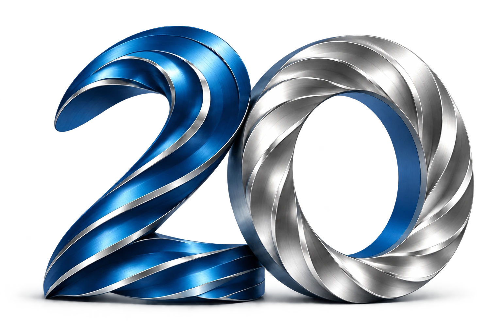

Přejít na obsah
2007–2027 · 20 let České endodontické společnosti
Kontakt a sekretariát ↗

Menu ☰
Kongres
Akce a vzdělávání
O ČES
Staňte se členem
EN
Úvod
/ Doporučení pro praxi
Doporučení pro praxi
Odborné materiály z archivu společnosti.
Jde o archivní dokumenty. Při použití zohledněte datum jejich vydání a aktuální odborná doporučení.
Závěrečný výplachový protokol (PDF)
Zachraň svůj zub – poučení pro veřejnost (PDF)
Vyhodnocení endodontické léčby (PDF)
Příprava zubu na endodontické ošetření (PDF)
Přihláška do ČES (PDF)